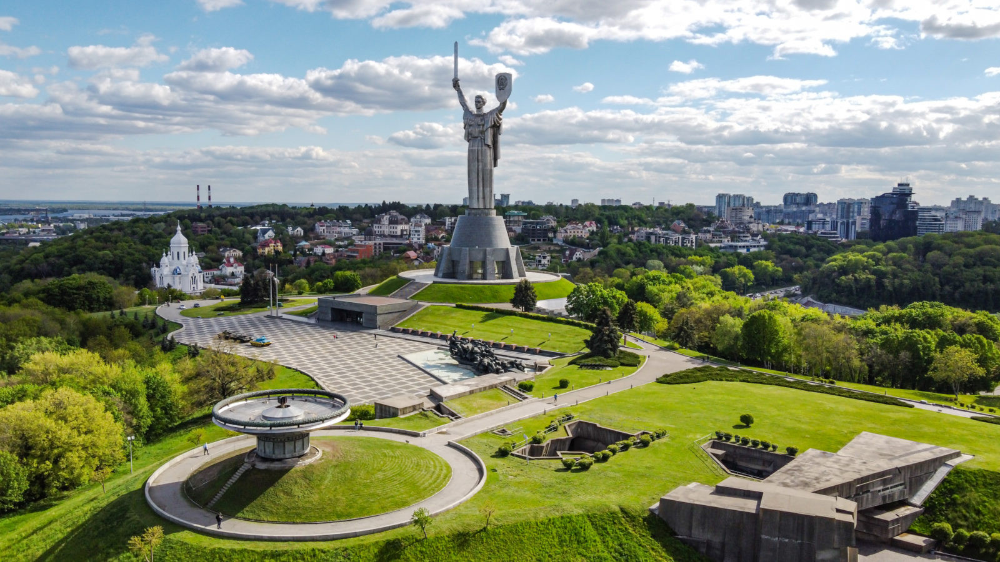

Народився: 17 жовтня 2003 року в мальовничому місті Вінниця, Вінницька область
Освіта: У 2020 році закінчив Фізико-Математичну Гімназію №17 м. Вінниця, після чого вступив до Київського Політехнічного Інституту ім. Ігоря Сікорського
Хобі:
Улюблені книги:
Для мене улюбленим містом став Київ. Ще декілька років назад я прожив не в Києві і мені досить часто наголошували, що велике місто - це жах і я дуже скоро повернуся. Але Київ став досить рідним для мене містом. Він ідеально підходить для моїх амбіцій, бажань та любові до пізнавання оточуючого .
Перше, що ви помітите, гуляючи по Києву - його масштабність. Гуляючи кварталом Києва, помічаєш, що ти вже догулявся до стомленості, а ще не все побачив з запланованого. А поїхавши до іншого району Києва, ніби опинаєшся в іншому місті. Тим, хто любить прогулянки та нові місця - вам точно сюди.
Іншим плюсом є неофіційний статус Києва - "місто амбіцій". Тут можна втілити в реальність велику частину своїх мрій та досягти досить великих висот, що складно зробити в невеликому місті.
